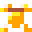

The Forged Curse Compendium
List of items, enemies you may encounter, and guides for The Forged Curse
Items
Hourglass
Use to rest, allowing for time to pass without an action. You can heal over time by resting.

Cheese
Eat to heal 20 points and increase rate of additional healing for a set amount of time. Found in both chests and loot drops.
Keys


Color coded keys that open doors of matching color.

Crowbar
Destroys barricaded doorways. Does not destroy barrels.

Grappling Hook
Hooks onto wooden objects and pulls you to them.

Push Rod
A magic rod that pushes heavy rocks.

Anvil
Part of the forge. Place the anvil on its pedastal.
Hammer
Use on anvil with a rekindled flame to craft arrows.
Bellows
Pushes enemies away. Use to rekindle the forge flame.
Magic Crossbow
Shoot enemies and cursed barriers at range. Requires silver arrows.
Silver arrows
Fire from crossbow. Restock at forge once reconstructed.
cricket
Stuns enemies and cursed barriers on screen. Long cooldown.
Bombs
Blow up cracked walls and barricaded doorways. Damages enemies (and you, watch out).
Blink Rod
Teleport over two spaces in cardinal directions. Take damage if teleport lands in something solid (watch out).
heart gem
Permanently increases health points by 10. There are five to find.
sword

Equip to increase attack power. wooden -> iron -> gold

armor
Equip to increase defense points. leather -> iron -> gold
silver
Required to forge silver arrows and place bombs. Found in both chests and loot drops.
Enemies
Cave Spider
Regular cave spider. Doesn't do anything special, just attacks.

Snake
Green snake, will attack and has a chance to poison on hit.

Bat
Bats will awaken and attack if walking too fast.
 <- Sleeping bat
<- Sleeping bat

Kikku
Kikku is just a li'l guy. And watch out, Kikku kick you.

Amanita
Red, spotted mushroom that releases confusion spores. Confusion messes with your controls. Rest to remove effect faster.

Browncap
Brown mushroom that releases slow spores. Slow lowers your speed, allows enemies to take multiple turns before your next turn. Rest to remove effect faster.

Lionsmane
Large mushroom that releases weak spores. Weak lowers your attack. Rest to remove effect faster.
Gnoglic
Strange mushroom that releases poison spores. Poison hurts you for a set amount of time. Rest to remove effect faster.

Cubepig
PIGsquad mascot. How could we not include them for the game jam?
Shadow
It's a spooky shadow monster and does spooky shadow monster stuff?
 <- Sleeping shadow
<- Sleeping shadow
Monstera
Will attack if you destroy its home so don't do that.

Snail
High defense, probably need a weapon of some kind to overcome the shell.

banana slug
How did a banana slug end up in a cave?

Battle Crab
Large claw and tough shell makes for a dangerous foe.
Axolotl
Its jet spray can hit you from far away.

shrimp
A meager shrimp. Just attacks, nothing more.

Slime


Does the classic slime thing of splitting into smaller slimes.

Corrupted Kobold
Its hand can attack at a distance but its home is fragile.
Eyebat
Like the regular bats but somehow tougher.
<- Sleeping bat
Reecher
Its hand can attack at a distance but its home is fragile.
Mimic
Beware of chests. One could be a mimic and you don't want do deal with that.

Potmimic
Beware of pots as well. One could be a pot mimic and you don't want do deal with that either.

Li'l Wiz
They may be little but they've got big eyebrows.
Maps and Guides
Original Game

- White: Progression items
- Yellow: Useful items
- Red/Orange/Green/Blue/White: Key Locations
- Lavender: Loot
- Pink: Heart Gems
- Peach: Non-chest progression items